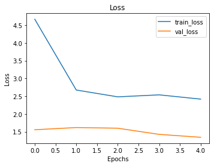

MeBeauty - CNN
Loss
Mean Absolute Error
Loss:
The loss graph for your CNN model on the MeBeauty dataset shows a clear downward trend in training loss over the epochs, indicating that the model is learning and improving its predictions on the training data. The validation loss, which remains relatively stable and low compared to the training loss, suggests that the model is not overfitting and is generalizing well to unseen data. The gap between the training and validation loss is narrowing, further indicating good model performance and effective learning.
Mean Absolute Error (MAE)
The MAE graph similarly shows a decrease in training MAE over the epochs, which aligns with the observed trend in training loss. The validation MAE remains stable and lower than the training MAE throughout the training process. This stability and lower validation MAE suggest that the model maintains its accuracy on the validation set, further confirming that the model is not overfitting. The overall low MAE values for both training and validation indicate that the model makes relatively accurate predictions.
Model Architecture and Parameters
The CNN model for the MeBeauty dataset consists of the following architecture:
- Data Preparation:
- Dataset: The dataset consists of image paths and corresponding attractiveness labels ranging from 0 to 10.
- Image Size: Images are resized to 224x224 pixels.
- Batch Size: A batch size of 16 is used for training and validation.
- Data Splitting: The dataset is split into training and validation sets with an 80-20 split using train_test_split with a random state of 42.
- Training Data: Augmented using ImageDataGenerator with rescaling (1./255), shear range (0.2), zoom range (0.2), and horizontal flip.
- Validation Data: Rescaled (1./255) without additional augmentations.
- Convolutional Layers:
- Conv2D (16 filters, 3x3 kernel, ReLU activation): Input layer accepting 224x224 RGB images
- MaxPooling2D (2x2 pool size): Reduces spatial dimensions
- Conv2D (32 filters, 3x3 kernel, ReLU activation)
- MaxPooling2D (2x2 pool size)
- Conv2D (64 filters, 3x3 kernel, ReLU activation)
- MaxPooling2D (2x2 pool size)
- Fully Connected Layers:
- Flatten: Converts the 2D matrix data to a 1D vector
- Dense (128 units, ReLU activation)
- Dropout (0.5): Regularization layer to prevent overfitting
- Dense (1 unit, linear activation): Output layer for regression
Compilation: The model is compiled with the Adam optimizer (learning rate of 0.001), mean squared error (MSE) as the loss function, and mean absolute error (MAE) as the evaluation metric.
Training: The model is trained for 5 epochs with a batch size of 16. Data augmentation techniques such as rescaling, shear range, zoom range, and horizontal flip are applied to the training data to improve generalization.
General Comments
Overall, the CNN model demonstrates effective learning with decreasing training loss and MAE, and stable, low validation loss and MAE. This indicates that the model is both accurate and generalizes well to new data. Given that the attractiveness levels range from 0 to 10, the low values in loss and MAE suggest that the model's predictions are close to the actual values, making it successful for this regression task. To further improve performance, you might consider experimenting with additional epochs, fine-tuning the model architecture, or exploring different regularization techniques.